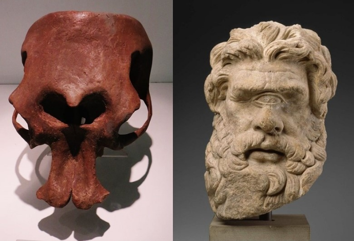
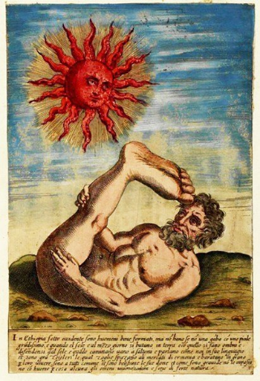

Tératologie
Science des formes accidentelles
"Je ne suis pas un animal ! Je suis un être humain! Je suis un homme!"
-John merrick, elephant man de david lynch
Ce chapitre du mémoire porte sur le thème de la tératologie et questionne la façon dont l’étude des déformations des corps d’individus fantastiques et réels se développe au sein de domaines de création formelles et littéraires, parallèlement à son utilisation médicale originelle.
Au cours de cette partie, j'aborde le sujet sensible de la malformation humaine et sa juxtaposition avec des personnages monstrueux fictifs. Mon intention n’est nullement ici de traiter ce genre de handicap comme une monstruosité.
Au contraire, une importante partie de ce chapitre consiste à illustrer comment la tératologie a permis de démystifier et dédiaboliser les malformations autrement perçues comme des aberrations naturelles, par une méthode de systématisation et de classification, favorisant une meilleure compréhension du monde médical et la normalisation de ces conditions.
La tératologie est une discipline scientifique visant à étudier, reconnaître et recenser les anomalies de l’organisation anatomique, congénitales et héréditaires des êtres vivants. D’abord destinée à rendre compte des anomalies les plus spectaculaires, elle est maintenant employée pour décrire tout écart anatomique interne ou externe que présente un individu, le comparant à un témoin normé.
La notion d’anomalie est liée de manière intrinsèque à celle de la norme et il est impossible de définir l’une sans savoir de quoi est composée l’autre. Dans Le normal et le pathologique, Canguilhem fait la distinction entre l’anomalie et l’adjectif anormal, employé à tort selon lui pour qualifier les corps tératologiques. L’adjectif anomal, pourtant utilisé par Isidore Geoffroy St hilaire pour décrire un sujet présentant une anomalie, et figurant dans le dictionnaire des médecins est erronément tombé en désuétude au profit de l’adjectif anormal.
Ainsi, là ou l’anomal est justement employé pour définir un caractère divergeant des lois naturelles de manière descriptive et factuelle, le concept d’anormal implique une référence à un modèle sociétal et par conséquent est un concept normatif qui par déformation est propice aux jugement de valeur. De manière plus générale, l’anomal définit l’insolite, ce qui s’éloigne par son organisation de la grande majorité des êtres naturels auxquels on est comparés, en présentant par exemple un membre surnuméraire; alors que l’anormal constitue ce qui s’éloigne de critères normatifs acceptés par une société, selon lesquels un corps en surpoids serait jugé comme anormal par nos critères esthétiques.
Cependant, l’anormal est passé dans le langage courant et médical pour décrire tout écart que présente un sujet avec un norme anatomique, une définition rappelant celle que nous avons donné pour décrire les monstres et qui, en un sens, pourrait expliquer les amalgames faits entre le concept de monstruosité et des cas tératologiques.
Ainsi, en dressant le cadre de la normalité anatomique, nous serons plus à même de mesurer l’ampleur de l’écart que ces nouvelles formes, générées de manière spontanée et inattendues, présentent. Peut-être saurons nous par la suite apprécier ces dernières non pas comme une erreur anatomique mais comme une nouveauté formelle, vectrice de créativité.
Au cours de cette partie, j'aborde le sujet sensible de la malformation humaine et sa juxtaposition avec des personnages monstrueux fictifs. Mon intention n’est nullement ici de traiter ce genre de handicap comme une monstruosité.
Au contraire, une importante partie de ce chapitre consiste à illustrer comment la tératologie a permis de démystifier et dédiaboliser les malformations autrement perçues comme des aberrations naturelles, par une méthode de systématisation et de classification, favorisant une meilleure compréhension du monde médical et la normalisation de ces conditions.
La tératologie est une discipline scientifique visant à étudier, reconnaître et recenser les anomalies de l’organisation anatomique, congénitales et héréditaires des êtres vivants. D’abord destinée à rendre compte des anomalies les plus spectaculaires, elle est maintenant employée pour décrire tout écart anatomique interne ou externe que présente un individu, le comparant à un témoin normé.
La notion d’anomalie est liée de manière intrinsèque à celle de la norme et il est impossible de définir l’une sans savoir de quoi est composée l’autre. Dans Le normal et le pathologique, Canguilhem fait la distinction entre l’anomalie et l’adjectif anormal, employé à tort selon lui pour qualifier les corps tératologiques. L’adjectif anomal, pourtant utilisé par Isidore Geoffroy St hilaire pour décrire un sujet présentant une anomalie, et figurant dans le dictionnaire des médecins est erronément tombé en désuétude au profit de l’adjectif anormal.
Ainsi, là ou l’anomal est justement employé pour définir un caractère divergeant des lois naturelles de manière descriptive et factuelle, le concept d’anormal implique une référence à un modèle sociétal et par conséquent est un concept normatif qui par déformation est propice aux jugement de valeur. De manière plus générale, l’anomal définit l’insolite, ce qui s’éloigne par son organisation de la grande majorité des êtres naturels auxquels on est comparés, en présentant par exemple un membre surnuméraire; alors que l’anormal constitue ce qui s’éloigne de critères normatifs acceptés par une société, selon lesquels un corps en surpoids serait jugé comme anormal par nos critères esthétiques.
Cependant, l’anormal est passé dans le langage courant et médical pour décrire tout écart que présente un sujet avec un norme anatomique, une définition rappelant celle que nous avons donné pour décrire les monstres et qui, en un sens, pourrait expliquer les amalgames faits entre le concept de monstruosité et des cas tératologiques.
Ainsi, en dressant le cadre de la normalité anatomique, nous serons plus à même de mesurer l’ampleur de l’écart que ces nouvelles formes, générées de manière spontanée et inattendues, présentent. Peut-être saurons nous par la suite apprécier ces dernières non pas comme une erreur anatomique mais comme une nouveauté formelle, vectrice de créativité.
L’anatomie est la science qui décrit la forme et la structure des organismes vivants. Dans le cas de la tératologie, on s’intéressera le plus souvent à l’anatomie macroscopique, observable à l’œil nu.
Il est important en premier lieu d’essayer de comprendre ce qui constitue la norme dans ce domaine avant de s’intéresser aux anomalies qui viennent la bouleverser.
De la même manière que la tératologie, l’étude de l’anatomie s’intéresse à la morphologie des individus et à l’organisation des différents organes qui les composent, ignorant les variations individuelles qui permettent de différencier
un individu normalement constitué d’un autre.
En somme, la présence de taches de rousseur sur la peau (éphélides) n’est pas considéré comme un caractère tératologique, comme le serait par exemple la présence d'un doigt surnuméraire (polydactylie).
La norme anatomique est avant tout définie par échantillonnage, comparant chaque individu avec la plus grande partie de son espèce possédant des caractéristiques identiques. Avant la découverte de la génétique, permettant de détecter des anomalies qui, à l’échelle moléculaire, provoquent des variations formelles significatives chez le sujet, cette méthode relativement empirique s’est avérée suffisamment efficace pour permettre aux générations passées de déterminer quels individus étaient susceptibles d’être reconnus comme anormaux.
Comme nous l’avons vu dans les autres chapitres de ce mémoire, le cerveau humain est doté de grandes capacités de reconnaissance de motifs récurrents, et nous possédons ce don inné de détecter de manière immédiate les nouveautés dans notre environnement, en particulier lorsque celles-ci sont une variante d’éléments qui nous sont préalablement familiers.
Il est important en premier lieu d’essayer de comprendre ce qui constitue la norme dans ce domaine avant de s’intéresser aux anomalies qui viennent la bouleverser.
De la même manière que la tératologie, l’étude de l’anatomie s’intéresse à la morphologie des individus et à l’organisation des différents organes qui les composent, ignorant les variations individuelles qui permettent de différencier
un individu normalement constitué d’un autre.
En somme, la présence de taches de rousseur sur la peau (éphélides) n’est pas considéré comme un caractère tératologique, comme le serait par exemple la présence d'un doigt surnuméraire (polydactylie).
La norme anatomique est avant tout définie par échantillonnage, comparant chaque individu avec la plus grande partie de son espèce possédant des caractéristiques identiques. Avant la découverte de la génétique, permettant de détecter des anomalies qui, à l’échelle moléculaire, provoquent des variations formelles significatives chez le sujet, cette méthode relativement empirique s’est avérée suffisamment efficace pour permettre aux générations passées de déterminer quels individus étaient susceptibles d’être reconnus comme anormaux.
Comme nous l’avons vu dans les autres chapitres de ce mémoire, le cerveau humain est doté de grandes capacités de reconnaissance de motifs récurrents, et nous possédons ce don inné de détecter de manière immédiate les nouveautés dans notre environnement, en particulier lorsque celles-ci sont une variante d’éléments qui nous sont préalablement familiers.
Les normes anatomiques, science exacte ou intuitions empiriques ?
Visages avec et sans taches de rousseurs
Cas de polydactylie
La tératologie trouve ses racines dès l’Antiquité, où à cette époque déjà on retrouve au sein de bestiaires zoologiques et fantastiques des écrits relatant de cas tératologiques, souvent mêlés à des récits pouvant êtres perçus de nos jours comme des légendes et mythes fabuleux.
Les naissances d’individus présentant des malformations ont longtemps été perçues de manière négative par les sociétés dans lesquelles ils viennent au monde. Résultant du fait d’un puissant ancrage du monstre dans le domaine du surnaturel et du maléfique, les mentalités au sujet des individus malformés évoluent lentement, freinées par les mythes et superstitions auxquels ils sont rattachés.
Durant l’Antiquité, les « monstres » sont perçus comme une punition ou un avertissement des dieux, faisant questionner le commun des mortels sur volonté divine au travers de ces anomalies. En Grèce comme à Rome, les individus monstrueux sont souvent tués alors qu’ils ne sont que nouveaux-nés, leur venue au monde étant toujours associée à un présage de mauvais augure.
Pline l’ancien décrit dans le quatrième volume de son Histoire naturelle, des récits d’Hérodote et de Ctésias, témoignant par exemple d’êtres humains possédant un pied unique disproportionné (Sciapode), ne possédant qu’un œil (Cyclope) ou ayant le visage directement implanté sur un torse absent de tête (Blemmye).
Ces trois créatures aux caractères tératologiques apparaissent dans les écrits de Pline aux côtés de monstres chimériques comme les hommes à tête de chien (cynocéphale), hybrides serpents-humain (anguipèdes) et homme à corps de chevaux (centaures.)
Les naissances d’individus présentant des malformations ont longtemps été perçues de manière négative par les sociétés dans lesquelles ils viennent au monde. Résultant du fait d’un puissant ancrage du monstre dans le domaine du surnaturel et du maléfique, les mentalités au sujet des individus malformés évoluent lentement, freinées par les mythes et superstitions auxquels ils sont rattachés.
Durant l’Antiquité, les « monstres » sont perçus comme une punition ou un avertissement des dieux, faisant questionner le commun des mortels sur volonté divine au travers de ces anomalies. En Grèce comme à Rome, les individus monstrueux sont souvent tués alors qu’ils ne sont que nouveaux-nés, leur venue au monde étant toujours associée à un présage de mauvais augure.
Pline l’ancien décrit dans le quatrième volume de son Histoire naturelle, des récits d’Hérodote et de Ctésias, témoignant par exemple d’êtres humains possédant un pied unique disproportionné (Sciapode), ne possédant qu’un œil (Cyclope) ou ayant le visage directement implanté sur un torse absent de tête (Blemmye).
Ces trois créatures aux caractères tératologiques apparaissent dans les écrits de Pline aux côtés de monstres chimériques comme les hommes à tête de chien (cynocéphale), hybrides serpents-humain (anguipèdes) et homme à corps de chevaux (centaures.)
De la rationalisation des monstres naturels à la tératologie moderne
Gravure de divers monstres médiévaux: de gauche à droite: Sciapode, Cyclope, Janus nain, Blemmye et Cynocéphale. Cosmographia de Sebastian Münster, 1550
La fée Mélusine, une Anguipède.
Détail d'un vitrail de l'église de Fougères
Détail d'un vitrail de l'église de Fougères
Ces monstres tératologiques et chimériques que Pline catalogue dans cet ouvrage sont présentés en tant qu’humains, adoptant des formes alternatives par une transformation corporelle fantastique.
Dans ce livre, Pline ne donne pas d’explication concrète sur ce qui causes les formes monstrueuses que prennent ces individus, et par conséquent ne s’oppose pas à la nature prophétique et divine qu’elles incarnent.
Cependant, l’inclusion de ces monstres habituellement considérés comme des créatures imaginaires au sein d’un ouvrage dédié à l’explication du monde naturel constitue un premier pas vers la rationalisation scientifique de ces derniers.
Le simple fait de reconnaître leur existence par le recensement permettra par la suite aux scientifiques modernes de chercher à donner du sens à ces anomalies corporelles.
Ses ouvrages se révèlent être une œuvre de référence importante pour les humanistes et savants de la Renaissance, qui non seulement approfondiront les recherches au sujet de ces monstres tout en rendant leurs représentation plus accessibles au public grâce à l’invention contemporaine de l’imprimerie.
Au Moyen Age et pendant la renaissance, le statut prophétique du monstre se transforme encore, nouvellement associé à l’œuvre du démon par la religion catholique, les femmes porteuses d’enfants malformés sont soupçonnées de sorcellerie, et le baptême est souvent refusé à ces individus n'étant pas reconnus comme le fruit de la création divine, jugée infaillible à cette époque.
Dans ce livre, Pline ne donne pas d’explication concrète sur ce qui causes les formes monstrueuses que prennent ces individus, et par conséquent ne s’oppose pas à la nature prophétique et divine qu’elles incarnent.
Cependant, l’inclusion de ces monstres habituellement considérés comme des créatures imaginaires au sein d’un ouvrage dédié à l’explication du monde naturel constitue un premier pas vers la rationalisation scientifique de ces derniers.
Le simple fait de reconnaître leur existence par le recensement permettra par la suite aux scientifiques modernes de chercher à donner du sens à ces anomalies corporelles.
Ses ouvrages se révèlent être une œuvre de référence importante pour les humanistes et savants de la Renaissance, qui non seulement approfondiront les recherches au sujet de ces monstres tout en rendant leurs représentation plus accessibles au public grâce à l’invention contemporaine de l’imprimerie.
Au Moyen Age et pendant la renaissance, le statut prophétique du monstre se transforme encore, nouvellement associé à l’œuvre du démon par la religion catholique, les femmes porteuses d’enfants malformés sont soupçonnées de sorcellerie, et le baptême est souvent refusé à ces individus n'étant pas reconnus comme le fruit de la création divine, jugée infaillible à cette époque.
Un homme sans tête avec les yeux sur les épaules, un homme sans tête aux yeux sur le torse et un homme avec une lèvre inférieure démesurée, illustration du XIIIe siècle
En 1573, le chirurgien Ambroise Paré publie le Traité illustré Des monstres et des prodiges, un livre dans lequel il référence de nombreuses créatures au travers d'illustrations issues à la fois de légendes ou d’observations personnelles dont il est témoin au cours de sa profession, approfondissant ainsi le travail de collecte d'informations sur les monstres commencé par Pline.
Au travers de différents textes illustrés, Paré tente pour la première fois d’expliquer de manière empirique les différentes causes d’existences de ces différents monstres, imaginaires comme réels. Les raisons que le chirurgien propose pour expliquer l’apparition de monstruosités varient grandement et toutes ne se basent pas sur un fondement scientifique.
Ainsi, les interventions divines ou démoniaques sont pour Paré des raisons aussi valides que celles des maladies, blessures ou complications congénitales liées à la gestation lorsqu’il est question de donner du sens aux monstres.
L’ouvrage traite par exemple des monstres chimériques en attribuant la cause de leur existence à un mélange de semences entre plusieurs espèces. Il présente aussi dans ses derniers chapitres certaines créatures fantastiques analogues à divers animaux exotiques issus des milieux marins, célestes et terrestres.
Outrepassant les causes liées à une intervention divine que propose Paré, on remarque une volonté d’en ancrer certaines dans une réalité biologique, associant à la fois les champs de l’anatomie et de la zoologie à la question de monstruosité.
Au travers de différents textes illustrés, Paré tente pour la première fois d’expliquer de manière empirique les différentes causes d’existences de ces différents monstres, imaginaires comme réels. Les raisons que le chirurgien propose pour expliquer l’apparition de monstruosités varient grandement et toutes ne se basent pas sur un fondement scientifique.
Ainsi, les interventions divines ou démoniaques sont pour Paré des raisons aussi valides que celles des maladies, blessures ou complications congénitales liées à la gestation lorsqu’il est question de donner du sens aux monstres.
L’ouvrage traite par exemple des monstres chimériques en attribuant la cause de leur existence à un mélange de semences entre plusieurs espèces. Il présente aussi dans ses derniers chapitres certaines créatures fantastiques analogues à divers animaux exotiques issus des milieux marins, célestes et terrestres.
Outrepassant les causes liées à une intervention divine que propose Paré, on remarque une volonté d’en ancrer certaines dans une réalité biologique, associant à la fois les champs de l’anatomie et de la zoologie à la question de monstruosité.
Illustrations de cas tératologiques,
Enfant siamois à gauche et individu phocomèle à droite
Enfant siamois à gauche et individu phocomèle à droite
Illustrations de créatures chimériques, Monstres de Ravenne (gauche) et individu à pattes de chien (droite)
Le travail de Fortunio Liceti, dans son traité De monstruorum natura, caussis et differentiis (ou Sur la nature, les causes, et les différences des monstres) publié en 1616, est un autre parfait exemple du moment charnière par lequel passe le monstre, entre la fin de la renaissance et le début de la période des lumières.
Le travail de gravure, réalisé par le peintre italien Giovanni Battista Bissoni, joue un rôle important dans la popularité qu'à reçu le livre de Liceti auprès de son audience, s’affranchissant des mises en scène épiques utilisées habituellement dans la représentation des monstres pour laisser place à une iconographie plus factuelle et anatomique de ces sujets.
À l’inverse de Paré, Liceti exclut la cause divine dans le processus d’apparition de monstres et commence par classer les différents types de monstres en catégories, dépendant de leur organisation morphologique tout en comparant ces défauts anatomiques à un individu témoin.
Excluant l’idée d’espèces monstrueuses vivant à l'état sauvage, il exprime que les monstres sont bel et bien issus d’anomalies épisodiques et accidentelles transformant les individus de manière spontanée. De cette manière, Liceti propose une première ébauche de la classification tératologique, y incorporant aussi bien des cas de malformations réelles que toutes sortes d’êtres fabuleux et mythologiques.
Le travail de gravure, réalisé par le peintre italien Giovanni Battista Bissoni, joue un rôle important dans la popularité qu'à reçu le livre de Liceti auprès de son audience, s’affranchissant des mises en scène épiques utilisées habituellement dans la représentation des monstres pour laisser place à une iconographie plus factuelle et anatomique de ces sujets.
À l’inverse de Paré, Liceti exclut la cause divine dans le processus d’apparition de monstres et commence par classer les différents types de monstres en catégories, dépendant de leur organisation morphologique tout en comparant ces défauts anatomiques à un individu témoin.
Excluant l’idée d’espèces monstrueuses vivant à l'état sauvage, il exprime que les monstres sont bel et bien issus d’anomalies épisodiques et accidentelles transformant les individus de manière spontanée. De cette manière, Liceti propose une première ébauche de la classification tératologique, y incorporant aussi bien des cas de malformations réelles que toutes sortes d’êtres fabuleux et mythologiques.
Enfants siamois
Planche dépeignant des individus siamois,
hybrides entre le chien et l'humain
hybrides entre le chien et l'humain
Monstres chimériques présentant des attributs tératologiques, Au milieu, le monstre de Cracovie représente un cas de tératologie fortement étudié.

Cette méthode d'analyse des monstruosités s’articule sous forme de classement autour des quatre causes énoncées par Aristote;
listant les diverses manières par lesquelles l’anomalie transforme le sujet en monstre:
-La cause formelle, comparant l’apparence structurale du sujet avec un modèle normalisé.
-La cause matérielle, traitant de quels matériaux est composé le corps du sujet.
-La cause efficiente, soit les processus mis en œuvre pour produire un individu.
-La cause finale, traitant de la fonction que remplissent les formes présentées par le sujet.
On peut établir un parallélisme entre ces quatre facteurs et les fondamentaux de la conception, supposant que les êtres, comme les objets peuvent être défectueux dépendant de leur forme et ces défauts peuvent advenir à différentes étapes de la conception.
À l’instar des écrits de Pline, ces deux ouvrages cataloguent sans différenciation les monstres mythologiques comme tératologiques.
Ainsi, bien que le travail de Liceti sur ce sujet représente l’amorce d’une séparation entre médecine et théologie, il faudra attendre le siècle des lumières pour qu’une réelle distinction soit faite entre le monstre imaginaire et le monstre médical.
C’est en effet durant la période moderne qu’on assiste à un vrai tournant concernant le statut du monstre tératologique. La « période fabuleuse » nommée ainsi par Isidore Geoffroy-St-Hilaire, père de la tératologie moderne, prends fin pour laisser place à une époque motivée par la science.
Au cours de cette période précédant notre époque contemporaine, de nombreux scientifiques cherchent activement à briser les mythes et superstitions qui entourent ces créatures, menant progressivement au phénomène de « Désenchantement des monstres » comme l’appellera Jean Jacques Courtines dans son livre Histoire des monstres publié en 2002.
Dans cette quête de démystification du monstre, les scientifiques joueront deux rôles majeurs :
-Le premier consiste en une meilleure compréhension des causes provoquant l’apparition de monstres tératologiques. S’intéressant davantage au développement de l’embryon et aux facteurs responsables de malformation en établissant une classification systématisée de ces anomalies.
-Le deuxième se base sur la dissociation entre monstres fantastiques et monstres tératologiques, appuyée par la classification tératologique, elle consiste en la formulation de théories pouvant rationaliser comment certains phénomènes naturels, alors inexpliqués, se sont retrouvés associés à diverses légendes.
listant les diverses manières par lesquelles l’anomalie transforme le sujet en monstre:
-La cause formelle, comparant l’apparence structurale du sujet avec un modèle normalisé.
-La cause matérielle, traitant de quels matériaux est composé le corps du sujet.
-La cause efficiente, soit les processus mis en œuvre pour produire un individu.
-La cause finale, traitant de la fonction que remplissent les formes présentées par le sujet.
On peut établir un parallélisme entre ces quatre facteurs et les fondamentaux de la conception, supposant que les êtres, comme les objets peuvent être défectueux dépendant de leur forme et ces défauts peuvent advenir à différentes étapes de la conception.
À l’instar des écrits de Pline, ces deux ouvrages cataloguent sans différenciation les monstres mythologiques comme tératologiques.
Ainsi, bien que le travail de Liceti sur ce sujet représente l’amorce d’une séparation entre médecine et théologie, il faudra attendre le siècle des lumières pour qu’une réelle distinction soit faite entre le monstre imaginaire et le monstre médical.
C’est en effet durant la période moderne qu’on assiste à un vrai tournant concernant le statut du monstre tératologique. La « période fabuleuse » nommée ainsi par Isidore Geoffroy-St-Hilaire, père de la tératologie moderne, prends fin pour laisser place à une époque motivée par la science.
Au cours de cette période précédant notre époque contemporaine, de nombreux scientifiques cherchent activement à briser les mythes et superstitions qui entourent ces créatures, menant progressivement au phénomène de « Désenchantement des monstres » comme l’appellera Jean Jacques Courtines dans son livre Histoire des monstres publié en 2002.
Dans cette quête de démystification du monstre, les scientifiques joueront deux rôles majeurs :
-Le premier consiste en une meilleure compréhension des causes provoquant l’apparition de monstres tératologiques. S’intéressant davantage au développement de l’embryon et aux facteurs responsables de malformation en établissant une classification systématisée de ces anomalies.
-Le deuxième se base sur la dissociation entre monstres fantastiques et monstres tératologiques, appuyée par la classification tératologique, elle consiste en la formulation de théories pouvant rationaliser comment certains phénomènes naturels, alors inexpliqués, se sont retrouvés associés à diverses légendes.
Les naturalistes français Étienne Geoffroy-Saint-Hilaire et son fils Isidore sont souvent considérés comme étant les pionniers de la tératologie moderne. Si l’existence d’anomalies de l’organisation des corps est depuis longtemps connue, ces dernières de par leur rareté, étaient souvent considérées comme des évènements aléatoires, trop isolés pour les relier en un seul champ d’études.
Vers la fin de sa vie, Étienne Geoffroy-Saint-Hilaire décide d’appliquer les méthodes de l’anatomie comparée à l’étude des difformités. Isidore Geoffroy-Saint-Hilaire continuera le travail de son père et publiera en 1832 le traité des anomalies, une classification des différentes monstruosités morphologique que peut présenter le corps humain.
La classification est une méthode qui consiste à classer un échantillon d'objets en les plaçant dans un ordre tel que la position relative de chacun d'eux, et de chaque groupe, exprime les rapports d'affinité et de dissemblance qui existent entre ces objets et ces groupes.
Elle se différencie des méthodes de recensement proposées par Ambroise Paré et Liceti, présentées sous forme de listes n’établissant aucun
ou peu de liens entre les différents articles qui les composent.
Vers la fin de sa vie, Étienne Geoffroy-Saint-Hilaire décide d’appliquer les méthodes de l’anatomie comparée à l’étude des difformités. Isidore Geoffroy-Saint-Hilaire continuera le travail de son père et publiera en 1832 le traité des anomalies, une classification des différentes monstruosités morphologique que peut présenter le corps humain.
La classification est une méthode qui consiste à classer un échantillon d'objets en les plaçant dans un ordre tel que la position relative de chacun d'eux, et de chaque groupe, exprime les rapports d'affinité et de dissemblance qui existent entre ces objets et ces groupes.
Elle se différencie des méthodes de recensement proposées par Ambroise Paré et Liceti, présentées sous forme de listes n’établissant aucun
ou peu de liens entre les différents articles qui les composent.
Parmi les scientifiques du 17eme siècle, Isidore Geoffroy St Hilaire
n’est pas le premier à proposer une classification tératologique.
Deux ans avant la publication de son Traité des anomalies,
Le scientifique allemand Ernst Julius Gurlt publie Beiträge zur vergleichenden pathologischen Anatomie der Gelenkkrankheiten (ou Contributions à l'anatomie pathologique comparée des maladies articulaires).
Dans cette dernière, Gurlt propose une méthode de nomenclature binaire
proche de celle employée pour la dénomination des espèces du vivant.
Le premier terme est ainsi employé pour définir la structure générale du sujet tandis que le second ajoute une précision sur la façon dont l’anomalie se produit chez l’individu. Ainsi un individu nommé Dicephalus biatlanticus désigne un sujet possédant deux têtes portées par deux atlas.
n’est pas le premier à proposer une classification tératologique.
Deux ans avant la publication de son Traité des anomalies,
Le scientifique allemand Ernst Julius Gurlt publie Beiträge zur vergleichenden pathologischen Anatomie der Gelenkkrankheiten (ou Contributions à l'anatomie pathologique comparée des maladies articulaires).
Dans cette dernière, Gurlt propose une méthode de nomenclature binaire
proche de celle employée pour la dénomination des espèces du vivant.
Le premier terme est ainsi employé pour définir la structure générale du sujet tandis que le second ajoute une précision sur la façon dont l’anomalie se produit chez l’individu. Ainsi un individu nommé Dicephalus biatlanticus désigne un sujet possédant deux têtes portées par deux atlas.
Deux squelettes d'enfants siamois
portant une variation du genre Dicephalus
portant une variation du genre Dicephalus
La classification tératologique et l’étude rationalisée des malformations
Cette nomenclature possède certains points intéressants, le plus important étant qu’il s’agit d’un système ouvert, permettant dès la découverte d’une nouvelle « espèce » de déformation de l’intégrer à la classification en lui définissant une appellation appropriée.
Cependant cette grande flexibilité possède aussi un problème majeur que la classification de Saint hilaire ne présente pas.
Ce dernier réside dans la possibilité de produire une infinité d’appellations différentes pour répondre à l’immense diversité formelle qu’offre le monde des anomalies.
Contrairement à l’arbre du vivant possédant un nombre d’espèces fini où chacun des représentants est lié par un principe de parenté, les monstruosités échappent à cette logique.
Ainsi, deux espèces de difformités similaires ne seront pas liées de la même façon que deux espèces d’animaux le serait.
De plus, les difformités ne sont pas toujours exclusives, ainsi le squelette de l’individu Dicephalus de droite présenté plus haut possède aussi une troisième jambe, impliquant l’ajout de nouvelles précisions dans son appellation concernant ses membres en plus de celles concernant sa tête.
À cela s’ajoute une barrière linguistique : les noms utilisés pour définir ces nouveaux types de difformités sont essentiellement des néologismes composés d’un mélange de racines latines et grecques dont il faut presque toujours définir la signification préalablement, rendant la systématisation de ce classement, simple en théorie, rapidement obsolète.
Enfin, la composition des noms donnés par Gurlt à ses sujets d’étude est fortement influencé par sa langue maternelle, résultant en la formation de longs noms composés tels que Heterodidymus Octipes emprosthochirophorus décrivant « Un individu dont le corps complet plus grand porte au sein un fœtus parfait dont les pattes antérieures sont fusionnées au-dessus et les pattes postérieures sont attachées à un bassin incomplet ».
Pour sa classification, Saint-Hilaire adopte un système beaucoup plus simplifié que celui de Gurlt, privilégiant l’utilisation de racines exclusivement grecques, organisées par paires pour former des termes de manière uninominale.
La racine suffixe exprime le lieu où siège l’anomalie tandis que le préfixe donne des précisions sur la nature de cette dernière.
De la même manière que la nomenclature de Gurlt, cela conduit à la formation de néologismes dont chacune des significations doit être apprise. Cependant le fait que cette nomenclature ne soit pas conçue pour être évolutive, réduit le nombre de termes à apprendre pour la déchiffrer à une petite centaine, favorisant sa prise en main.
Cependant cette grande flexibilité possède aussi un problème majeur que la classification de Saint hilaire ne présente pas.
Ce dernier réside dans la possibilité de produire une infinité d’appellations différentes pour répondre à l’immense diversité formelle qu’offre le monde des anomalies.
Contrairement à l’arbre du vivant possédant un nombre d’espèces fini où chacun des représentants est lié par un principe de parenté, les monstruosités échappent à cette logique.
Ainsi, deux espèces de difformités similaires ne seront pas liées de la même façon que deux espèces d’animaux le serait.
De plus, les difformités ne sont pas toujours exclusives, ainsi le squelette de l’individu Dicephalus de droite présenté plus haut possède aussi une troisième jambe, impliquant l’ajout de nouvelles précisions dans son appellation concernant ses membres en plus de celles concernant sa tête.
À cela s’ajoute une barrière linguistique : les noms utilisés pour définir ces nouveaux types de difformités sont essentiellement des néologismes composés d’un mélange de racines latines et grecques dont il faut presque toujours définir la signification préalablement, rendant la systématisation de ce classement, simple en théorie, rapidement obsolète.
Enfin, la composition des noms donnés par Gurlt à ses sujets d’étude est fortement influencé par sa langue maternelle, résultant en la formation de longs noms composés tels que Heterodidymus Octipes emprosthochirophorus décrivant « Un individu dont le corps complet plus grand porte au sein un fœtus parfait dont les pattes antérieures sont fusionnées au-dessus et les pattes postérieures sont attachées à un bassin incomplet ».
Pour sa classification, Saint-Hilaire adopte un système beaucoup plus simplifié que celui de Gurlt, privilégiant l’utilisation de racines exclusivement grecques, organisées par paires pour former des termes de manière uninominale.
La racine suffixe exprime le lieu où siège l’anomalie tandis que le préfixe donne des précisions sur la nature de cette dernière.
De la même manière que la nomenclature de Gurlt, cela conduit à la formation de néologismes dont chacune des significations doit être apprise. Cependant le fait que cette nomenclature ne soit pas conçue pour être évolutive, réduit le nombre de termes à apprendre pour la déchiffrer à une petite centaine, favorisant sa prise en main.
Planche anatomique des différents types de syméliens par I. Geoffroy St-Hilaire
Cartographie N°5: Détail de la classification tératologique d'Isidore Geoffroy St-Hilaire,
anomalies concernant des membres.
anomalies concernant des membres.
Ces termes simplifiés à la composition explicite permettent une utilisation intuitive de cette classification, qui contrairement à celle de Gurlt, ne cherche pas à répondre à la diversité des anomalies mais plutôt de comprendre comment ces dernières sont liées de manière structurelle.
Ainsi un individu symélien, du grec ancien Sy- «ensemble» et μέλος, (mèlos) «membre» définit un monstre dont les deux membres inférieurs ou postérieurs sont soudés ou confondus.
Au sein des individus syméliens, on retrouve d’une part les sirénomèles dont les membres abdominaux soudés se terminent en moignon et de l’autre les uromèles, dont les membres abdominaux se terminent en un pied unique. Enfin, les autres types d’anomalies impliquant la soudure des membres se produisant d’une manière moins précise que les précédentes sont catégorisés comme symèles indifférenciés.
Ainsi un individu symélien, du grec ancien Sy- «ensemble» et μέλος, (mèlos) «membre» définit un monstre dont les deux membres inférieurs ou postérieurs sont soudés ou confondus.
Au sein des individus syméliens, on retrouve d’une part les sirénomèles dont les membres abdominaux soudés se terminent en moignon et de l’autre les uromèles, dont les membres abdominaux se terminent en un pied unique. Enfin, les autres types d’anomalies impliquant la soudure des membres se produisant d’une manière moins précise que les précédentes sont catégorisés comme symèles indifférenciés.
Saint hilaire propose d’étudier le monstre de manière structurale et définit cinq facteurs servant à identifier comment se manifestent les différents types de difformités :
Le volume général d’un individu ou d’une partie spécifique de son corps, variant par une diminution ou une augmentation par rapport à une norme donnée.
La forme des organes et leur possible déformation par rapport à un témoin normé.
La structure du corps, traitant de quoi sont composés les différents organes de l’individu.
Cela inclut à la fois la couleur de l’individu (observation d’une pigmentation ou décoloration anormale) mais aussi la texture de différents organes présentant un ramollissement ou une induration (cornes).
La disposition des différents organes de l’individu, comprenant le déplacement, la disjonction, et la continuité de membres ou de tissus de manière anormale.
Le nombre d’organes, impliquant la possibilité d’une partie manquante ou surnuméraire.
Comme nous avons pu le voir, la tératologie est intimement liée à la mythologie, où de nombreux personnages fantastiques présentent des difformités analogues à celles proposées par St-Hilaire.
Si l’apparition de mythes et légendes mettant en scène ces créatures fabuleuses est en grande partie due à un manque d’explication rationnelle, les progrès de la tératologie au cours de l’époque moderne permettent alors d’inverser la tendance.
Le volume général d’un individu ou d’une partie spécifique de son corps, variant par une diminution ou une augmentation par rapport à une norme donnée.
La forme des organes et leur possible déformation par rapport à un témoin normé.
La structure du corps, traitant de quoi sont composés les différents organes de l’individu.
Cela inclut à la fois la couleur de l’individu (observation d’une pigmentation ou décoloration anormale) mais aussi la texture de différents organes présentant un ramollissement ou une induration (cornes).
La disposition des différents organes de l’individu, comprenant le déplacement, la disjonction, et la continuité de membres ou de tissus de manière anormale.
Le nombre d’organes, impliquant la possibilité d’une partie manquante ou surnuméraire.
Comme nous avons pu le voir, la tératologie est intimement liée à la mythologie, où de nombreux personnages fantastiques présentent des difformités analogues à celles proposées par St-Hilaire.
Si l’apparition de mythes et légendes mettant en scène ces créatures fabuleuses est en grande partie due à un manque d’explication rationnelle, les progrès de la tératologie au cours de l’époque moderne permettent alors d’inverser la tendance.
Le géant Battista Hugo et le lilliputien Adrien,
Carte postale, 1910
Carte postale, 1910
Puisque notre étude tératologique commence avec les écrits de Pline l’ancien, il paraît logique de jeter une lumière sur les monstres qu’il décrit dans son Histoire naturelle et tenter de comprendre comment de telles légendes sont venues à émerger.
Le Sciapode et le Cyclope trouvent tous deux une explication rationnelle dans l’étude tératologique de leur corps.
La description des sciapodes, ces êtres à pied unique et disproportionné, correspond en tout point à celle d’un homme aux caractères uromèles décrit un peu plus haut.
Il en va de même pour le Cyclope : ce géant mangeur d’hommes présentant un œil unique au milieu de son front présente le même faciès que les individus cyclocéphales décrits par St-Hilaire.
Cependant, il faudra aller chercher en dehors du champ de la tératologie pour expliquer le caractère titanesque attribué au cyclope.
Tout porte à croire que la morphologie des cranes d’éléphants, une fois ôtés de leurs défenses peut être perçue comme les vestiges d’une immense créature cyclopéenne, confondant le passage nasal où s’implante normalement la trompe de l’animal pour un orbite unique.
Le Sciapode et le Cyclope trouvent tous deux une explication rationnelle dans l’étude tératologique de leur corps.
La description des sciapodes, ces êtres à pied unique et disproportionné, correspond en tout point à celle d’un homme aux caractères uromèles décrit un peu plus haut.
Il en va de même pour le Cyclope : ce géant mangeur d’hommes présentant un œil unique au milieu de son front présente le même faciès que les individus cyclocéphales décrits par St-Hilaire.
Cependant, il faudra aller chercher en dehors du champ de la tératologie pour expliquer le caractère titanesque attribué au cyclope.
Tout porte à croire que la morphologie des cranes d’éléphants, une fois ôtés de leurs défenses peut être perçue comme les vestiges d’une immense créature cyclopéenne, confondant le passage nasal où s’implante normalement la trompe de l’animal pour un orbite unique.
Monopode figurant dans Les Escarts de la nature de Regnault, 1775.
Comparaison entre un Crane d'éléphant pygmée Palaeoloxodon falconeri et une statue du cyclope Polyphème
Sciapode s'abritant sous
l'ombre de son pied unique.


l'ombre de son pied unique.
Dissociation des monstres mythologiques de leur contrepartie tératologique.
Les mythologies grecque et romaine regorgent de monstres, présentant aussi bien des difformités que des caractères bestiaux. Ainsi les créatures tératologiques et chimériques, appartenant respectivement à deux registres monstrueux différents, trouvent parfois des terrains communs lorsqu’il est question de leur origine.
Le Blemmye et les Cynocéphales forment à eux deux un excellent objet d’étude de cette rencontre entre la tératologie et les chimères.
Les Blemmyes sont des créatures ressemblant à des humains dépourvus de tête, dont les traits faciaux sont placés sur le torse.
Si l’explication la plus simple semble être de nature tératologique, suggérant une ressemblance entre ces monstres et un individu acéphale, les mythes traitant de ces monstres les décrivent comme des créatures sociales vivant en colonies et douées de raison.
Leur ressemblance avec les hommes laisse suggérer que les premiers observateurs de ces monstres auraient en réalité rencontré une espèce de singe proche des bonobos ou des orangs-outans, dont la carrure voûtée donnerait l’illusion d’un corps sans tête au visage implanté sur le torse.
Le Blemmye et les Cynocéphales forment à eux deux un excellent objet d’étude de cette rencontre entre la tératologie et les chimères.
Les Blemmyes sont des créatures ressemblant à des humains dépourvus de tête, dont les traits faciaux sont placés sur le torse.
Si l’explication la plus simple semble être de nature tératologique, suggérant une ressemblance entre ces monstres et un individu acéphale, les mythes traitant de ces monstres les décrivent comme des créatures sociales vivant en colonies et douées de raison.
Leur ressemblance avec les hommes laisse suggérer que les premiers observateurs de ces monstres auraient en réalité rencontré une espèce de singe proche des bonobos ou des orangs-outans, dont la carrure voûtée donnerait l’illusion d’un corps sans tête au visage implanté sur le torse.
Alexandre rencontre le peuple sans tete, 1445
Enluminure de Blemmye
Anomalies acéphales
Orang-outan
Les cynocéphales sont des créatures chimériques anthropomorphes aux traits canins que l’on retrouve dans de nombreux mythes et récits.
Ces monstres jouent parfois les rôles importants de figures religieuses, comme le dieu égyptien Anubis à tête de chacal, lui-même lié à Christophe de Lycie, le saint patron des voyageurs, représenté quelques fois comme un homme à tête de chien converti au catholicisme.
Parfois encore, ils sont les victimes de malédictions ou d’afflictions, comme de Le roi grec Lycaon, maudit et changé en loup par Zeus ou encore les loup-garous, hommes atteints de lycanthropie qui, sous l’action de la lune, cèdent à une rage bestiale et se transforment.
Ces monstres jouent parfois les rôles importants de figures religieuses, comme le dieu égyptien Anubis à tête de chacal, lui-même lié à Christophe de Lycie, le saint patron des voyageurs, représenté quelques fois comme un homme à tête de chien converti au catholicisme.
Parfois encore, ils sont les victimes de malédictions ou d’afflictions, comme de Le roi grec Lycaon, maudit et changé en loup par Zeus ou encore les loup-garous, hommes atteints de lycanthropie qui, sous l’action de la lune, cèdent à une rage bestiale et se transforment.
Si la cynocéphalie est un caractère aussi prévalent dans la mythologie, cela est probablement la résultante d’une convergence de multiples observations de ce phénomène au travers de diverses époques.
Loup-garou
Anubis
St-Christophe
Le roi Lycaon
Deux explications servent à rationaliser ces descriptions d’hommes à tête de chien : la première pourrait être d’ordre médical, s’expliquant par la condition d’hypertrichose responsable de la pousse de poils sur l’entièreté du corps, pouvant se développer rapidement dû à un dérèglement hormonal et donnant cette impression de transformation subite associée au loup-garou.
La seconde, similaire au cas des Blemmyes, concerne le caractère social de ces hommes chiens.
Le terme cynocéphale est aussi employé pour définir un type morphologique de singes appartenant à la famille des babouins et des mandrills, présentant un museau allongé à grandes canines analogue à celui du chien. Il est fortement possible que les premiers observateurs de ces colonies de singes aient cru être témoins d’une espèce hybride entre l’homme et le loup, de la même manière que les orang-outang furent associés au blemmyes.
La seconde, similaire au cas des Blemmyes, concerne le caractère social de ces hommes chiens.
Le terme cynocéphale est aussi employé pour définir un type morphologique de singes appartenant à la famille des babouins et des mandrills, présentant un museau allongé à grandes canines analogue à celui du chien. Il est fortement possible que les premiers observateurs de ces colonies de singes aient cru être témoins d’une espèce hybride entre l’homme et le loup, de la même manière que les orang-outang furent associés au blemmyes.
Ainsi, l’origine de nombreux monstres trouve son explication par une approche croisée, à la fois tératologique et zoologique. La création de monstres mythologiques semble presque exclusivement être le résultat d’observations morphologiques erronées puis amplifiées par notre imagination.
Cette déformation imaginative des anomalies en parties animales conduit dans certains cas à transformer une anomalie tératologique en monstre chimérique par analogie formelle et par extrapolation, conduit à un récit purement imaginaire résultant en la création de chimères.
Cette déformation imaginative des anomalies en parties animales conduit dans certains cas à transformer une anomalie tératologique en monstre chimérique par analogie formelle et par extrapolation, conduit à un récit purement imaginaire résultant en la création de chimères.
Cynocéphales habillés
Babouin bipède
Babouin aux crocs et museau cynocéphale
Cas d'hypertrichose chez l'Homme
La classification de Saint-Hilaire s’articule donc autour de cinq natures de difformités vues plus haut, à savoir le volume, la forme, la structure (couleur et texture), la disposition et le nombre, chacun de ces types de difformités pouvant affecter diverses parties du corps.
Je m’intéresse dans cette partie à la manière d’organiser les monstres de fiction selon la localisation et la nature de leurs difformités.
L’échantillon de monstres utilisé pour cet objet d’étude comprend tout les individus contenus dans la moitié gauche du tableau présenté en introduction.
Ce système de classement se présente comme un tableau à double entrée, avec en abscisse les natures de chaque anomalie et en ordonnée les différentes parties du corps affectées par ces dernières. Chaque monstre trouve alors sa place dans la case correspondante dépendant des différentes anomalies qu’il présente.
La case à la rencontre entre chaque combinaison porte le terme tératologique (s’il existe) correspondant à l’anomalie. Par exemple, une créature porteuse de plusieurs têtes comme l’hydre sera définie comme polycéphale.
Les anomalies n’étant pas exclusives, il semblerait logique que certains monstres partagent plusieurs cases, comme le Tengu japonais qui possède à la fois un nez disproportionné (case Grand/Nez) mais aussi une peau anormalement rouge (case Couleur/Corps).
Pour un souci de lisibilité, j’ai pris parti de limiter le nombre d’exemples rentrant dans chaque catégorie, privilégiant les qualités formelles les plus caractéristiques de chaque monstre plutôt que leur quantité représentative, limitant ainsi les redondances.
Chaque monstre trouve alors sa place dans ce tableau selon l’importance accordée à son anomalie la plus significative, ainsi le caractère à l’œil unique du cyclope (cyclocéphalie) sera prédominant sur son caractère de grande taille (gigantisme).
Ici encore je vous invite à explorer cette collection de figures monstrueuses, classées selon les caractéristiques tératologiques qu'ils présentent.
Je m’intéresse dans cette partie à la manière d’organiser les monstres de fiction selon la localisation et la nature de leurs difformités.
L’échantillon de monstres utilisé pour cet objet d’étude comprend tout les individus contenus dans la moitié gauche du tableau présenté en introduction.
Ce système de classement se présente comme un tableau à double entrée, avec en abscisse les natures de chaque anomalie et en ordonnée les différentes parties du corps affectées par ces dernières. Chaque monstre trouve alors sa place dans la case correspondante dépendant des différentes anomalies qu’il présente.
La case à la rencontre entre chaque combinaison porte le terme tératologique (s’il existe) correspondant à l’anomalie. Par exemple, une créature porteuse de plusieurs têtes comme l’hydre sera définie comme polycéphale.
Les anomalies n’étant pas exclusives, il semblerait logique que certains monstres partagent plusieurs cases, comme le Tengu japonais qui possède à la fois un nez disproportionné (case Grand/Nez) mais aussi une peau anormalement rouge (case Couleur/Corps).
Pour un souci de lisibilité, j’ai pris parti de limiter le nombre d’exemples rentrant dans chaque catégorie, privilégiant les qualités formelles les plus caractéristiques de chaque monstre plutôt que leur quantité représentative, limitant ainsi les redondances.
Chaque monstre trouve alors sa place dans ce tableau selon l’importance accordée à son anomalie la plus significative, ainsi le caractère à l’œil unique du cyclope (cyclocéphalie) sera prédominant sur son caractère de grande taille (gigantisme).
Ici encore je vous invite à explorer cette collection de figures monstrueuses, classées selon les caractéristiques tératologiques qu'ils présentent.
Diagnostic tératologique des monstres de fiction

De cette collecte, je relève certaines observations intéressantes, la première étant une forte disparité concernant la répartition des traits tératologiques associés aux monstres.
Certains caractères comme la cyclocéphalie (un œil), la polycéphalie (plusieurs têtes) et le gigantisme sont représentés en très grand nombre alors que d’autres cas tératologiques plus discrets, comme la microcéphalie (petite tête) ou la syndactylie (manque de doigts) sont absents.
On peut alors établir un parallélisme entre les cas tératologiques les plus spectaculaires et la forte représentation de leurs équivalents mythologiques, et ce même au travers de différentes cultures. Ainsi, les mythologies grecque, nordique et japonaise possèdent chacune des cyclopes, géants et polymèles (individus à membres surnuméraires).
On observe même des ressemblances frappantes entre certains monstres de cultures éloignées comme le Blemmye grec et le Donotsura japonais, deux créatures acéphales, ou encore l’Hydre de Lerne et Yamata-no-orochi, deux reptiles aux têtes multiples.
On peut supposer que certaines observations tératologiques indépendantes auront probablement influencé la création de ces monstres par une sorte de phénomène de convergence mythologique.
Certains caractères comme la cyclocéphalie (un œil), la polycéphalie (plusieurs têtes) et le gigantisme sont représentés en très grand nombre alors que d’autres cas tératologiques plus discrets, comme la microcéphalie (petite tête) ou la syndactylie (manque de doigts) sont absents.
On peut alors établir un parallélisme entre les cas tératologiques les plus spectaculaires et la forte représentation de leurs équivalents mythologiques, et ce même au travers de différentes cultures. Ainsi, les mythologies grecque, nordique et japonaise possèdent chacune des cyclopes, géants et polymèles (individus à membres surnuméraires).
On observe même des ressemblances frappantes entre certains monstres de cultures éloignées comme le Blemmye grec et le Donotsura japonais, deux créatures acéphales, ou encore l’Hydre de Lerne et Yamata-no-orochi, deux reptiles aux têtes multiples.
On peut supposer que certaines observations tératologiques indépendantes auront probablement influencé la création de ces monstres par une sorte de phénomène de convergence mythologique.
Yamata-no-Orochi (gauche) et Hydre de Lerne (droite), dragons polycéphales
Cartographie N°6: Diagnostic tératologique de différentes figures mythologiques.
Blemmye (gauche) et Donotsura (droite), hommes sans têtes
Je remarque aussi que contrairement aux chimères qui sont pour la plupart de provenance occidentale, la culture japonaise est particulièrement riche en monstres tératologiques.
Les yokaïs, ces esprits aux formes grotesques forment un corpus Tératologique fascinant, que des artistes comme Sawaki Suushi de la période Édo ou Shigeru Mizuki, plus contemporain, nous donnent à voir au travers de bestiaires fantastiques, faisant perdurer encore aujourd’hui la culture de ces monstres aux corps déformés.
Les yokaïs, ces esprits aux formes grotesques forment un corpus Tératologique fascinant, que des artistes comme Sawaki Suushi de la période Édo ou Shigeru Mizuki, plus contemporain, nous donnent à voir au travers de bestiaires fantastiques, faisant perdurer encore aujourd’hui la culture de ces monstres aux corps déformés.
Beaucoup des sujets présentés dans ce tableau sont de forme humanoïde, ce qui paraît logique si l’on considère que la plupart des observations tératologiques auxquelles nous somment exposées concernent des spécimens humains, renforçant ainsi la relation intime que l’homme partage avec ce type de monstres.
Nurarihyon par Sawaki Suushi, 1737
Divers Yokai par Shigeru mizuki, 2002
Après avoir vu comment une approche zoologique et tératologique permet d’établir des liens entre plusieurs créatures sur le plan morphologique, je souhaite appliquer ces méthodes au sujet des dragons, monstres dont la diversité formelle constitue un objet d’étude particulièrement riche.
Comme nous l’avons vu dans la partie de ce mémoire concernant les chimères, le dragon est un monstre universellement reconnu et représenté dans toutes les mythologies du monde. Je souhaite ici utiliser les principes de classification, d’abord Morphologique, puis phylogénétique et tératologique, afin d’établir des liens entre les différentes représentations formelles employées pour dépeindre les dragons des différentes cultures. J’espère ainsi comprendre, par rétro-ingénierie de ces outils de classement, les processus créatifs mis en œuvre dans l’apparition de cette variété formelle de monstre.
Je propose donc quatre classifications inspirées de différents modèles employés en zoologie, phylogénie et tératologie pour classer les différentes espèces du monde vivant, sachant pertinemment que je rencontrerai des illogismes lors de leur mise en forme, compte tenu de la nature imaginaire de mon sujet.
Comme nous l’avons vu dans la partie de ce mémoire concernant les chimères, le dragon est un monstre universellement reconnu et représenté dans toutes les mythologies du monde. Je souhaite ici utiliser les principes de classification, d’abord Morphologique, puis phylogénétique et tératologique, afin d’établir des liens entre les différentes représentations formelles employées pour dépeindre les dragons des différentes cultures. J’espère ainsi comprendre, par rétro-ingénierie de ces outils de classement, les processus créatifs mis en œuvre dans l’apparition de cette variété formelle de monstre.
Je propose donc quatre classifications inspirées de différents modèles employés en zoologie, phylogénie et tératologie pour classer les différentes espèces du monde vivant, sachant pertinemment que je rencontrerai des illogismes lors de leur mise en forme, compte tenu de la nature imaginaire de mon sujet.
On remarque que le dragon est le second monstre le plus représenté dans ce tableau de classement des anomalies présentées par les monstres.
Par le biais de caractères tératologiques, le dragon « normal » se décline en de nombreuses autres formes, comme l’Amphisbène grec, le Balaur roumain ou le Feiyi chinois, pour n’en citer que trois.
Par le biais de caractères tératologiques, le dragon « normal » se décline en de nombreuses autres formes, comme l’Amphisbène grec, le Balaur roumain ou le Feiyi chinois, pour n’en citer que trois.
Amphisbène
Feiyi
Balaur
Phylogénies du Dragon
C’est précisément ce que je cherche à illustrer dans les deux graphiques suivants, où le statut monstrueux de dragon passe au second plan
afin de privilégier ses caractères animaliers. Chaque forme de dragon est ici considérée comme une espèce à part entière, intégrée dans
notre arbre du vivant suivant deux logiques différentes mais néanmoins théoriquement valables.
afin de privilégier ses caractères animaliers. Chaque forme de dragon est ici considérée comme une espèce à part entière, intégrée dans
notre arbre du vivant suivant deux logiques différentes mais néanmoins théoriquement valables.
Classement morphologique
Ce premier modèle se base sur une étude purement morphologique des dragons,
faisant émerger différentes catégories dépendant de la disposition des caractères qu’ils présentent. Ces caractères en question étant le nombre de membres postérieurs et antérieurs, la présence ou absence d’ailes ainsi que le nombre de têtes que chaque individu possède.
J’obtiens alors un graphique de la sorte, établissant des liens de parenté entre chaque type de dragon dépendant du nombre de caractères formels communs que chacun possède avec son voisin.
La lecture de ce graphique s’effectue de cette façon: Si l’on prend l’exemple des wyverns et des cocatrices, ces deux créatures se présentent comme des dragons bipèdes dont les pattes antérieures sont remplacées par des ailes.
Ces deux groupes morphologiques se différencient par le fait que la cocatrice présente une tête de poulet tandis que le wyvern possède une tête de reptile, commun au autres dragons.
Cependant ces deux groupes sont plus proches morphologiquement entre eux qu’il ne le serait avec celui des vrais dragons ou des amphiptères, possédant eux aussi des ailes mais ne présentant pas le même nombre de pattes.
Cette classification a pour effet d’ordonner les dragons selon leur forme uniquement, sans pour autant les ancrer dans un contexte de réalité biologique.
Ce premier modèle se base sur une étude purement morphologique des dragons,
faisant émerger différentes catégories dépendant de la disposition des caractères qu’ils présentent. Ces caractères en question étant le nombre de membres postérieurs et antérieurs, la présence ou absence d’ailes ainsi que le nombre de têtes que chaque individu possède.
J’obtiens alors un graphique de la sorte, établissant des liens de parenté entre chaque type de dragon dépendant du nombre de caractères formels communs que chacun possède avec son voisin.
La lecture de ce graphique s’effectue de cette façon: Si l’on prend l’exemple des wyverns et des cocatrices, ces deux créatures se présentent comme des dragons bipèdes dont les pattes antérieures sont remplacées par des ailes.
Ces deux groupes morphologiques se différencient par le fait que la cocatrice présente une tête de poulet tandis que le wyvern possède une tête de reptile, commun au autres dragons.
Cependant ces deux groupes sont plus proches morphologiquement entre eux qu’il ne le serait avec celui des vrais dragons ou des amphiptères, possédant eux aussi des ailes mais ne présentant pas le même nombre de pattes.
Cette classification a pour effet d’ordonner les dragons selon leur forme uniquement, sans pour autant les ancrer dans un contexte de réalité biologique.
Cependant, ce modèle possède plusieurs défauts, le premier étant que le serpent est lui-même un descendant d’animaux quadrupèdes ayant perdu ses pattes au cours de l’évolution. Par conséquent la morphologie des dragons impliquerait une réversion totale de cette perte de patte, plus encore, cela impliquerait l’apparition d’ailes, un caractère partagé indépendamment par les oiseaux et les chauves-souris, deux animaux très éloignés génétiquement des serpents.
Classement phylogénétiques
Si l’on considère les dragons d’un point de vue strictement zoologique, on remarque qu’ils sont tous reliés par un trait animal commun ; se traduisant par un immense corps de serpent.
Il paraît alors logique dans un premier temps de considérer les dragons comme descendants évolutifs du serpent.
Ce dernier représenterait ici la forme la plus basique du dragon qui viendrait se complexifier en gagnant différents caractères comme des ailes ou des pattes par un processus d’évolution.
Si l’on considère les dragons d’un point de vue strictement zoologique, on remarque qu’ils sont tous reliés par un trait animal commun ; se traduisant par un immense corps de serpent.
Il paraît alors logique dans un premier temps de considérer les dragons comme descendants évolutifs du serpent.
Ce dernier représenterait ici la forme la plus basique du dragon qui viendrait se complexifier en gagnant différents caractères comme des ailes ou des pattes par un processus d’évolution.
Il paraît plus logique de considérer les dragons comme appartenant à plusieurs groupes phylogénétiques existants, supposant une convergence formelle entre
des individus éloignés.
Ainsi, les dragons sont répartis ici parmi quatre grandes familles du vivant.
La majorité des représentants appartiennent au groupe des reptiles et se différencient en trois sous-groupes morphologiques :
-Les Serpentoïdes possédant un corps allongé et un nombre de pattes réduit.
-Les Drakoïdes, possédant quatre membres, ailes comprises.
-Les Dragonoïdes possédant six membres en comptant les ailes.
À l’extérieur de ce groupe, on retrouve les serpents de mer et léviathans au sein des poissons, le kirin au sein des mammifères et la cocatrice au sein des oiseaux.
des individus éloignés.
Ainsi, les dragons sont répartis ici parmi quatre grandes familles du vivant.
La majorité des représentants appartiennent au groupe des reptiles et se différencient en trois sous-groupes morphologiques :
-Les Serpentoïdes possédant un corps allongé et un nombre de pattes réduit.
-Les Drakoïdes, possédant quatre membres, ailes comprises.
-Les Dragonoïdes possédant six membres en comptant les ailes.
À l’extérieur de ce groupe, on retrouve les serpents de mer et léviathans au sein des poissons, le kirin au sein des mammifères et la cocatrice au sein des oiseaux.

En appliquant ainsi les outils de classification du vivant, à ces créatures fantastiques ; nous pouvons tenter de donner du sens aux monstres en les incluant dans un modèle réel existant.
Cependant, je ne considère pas la classification phylogénétique comme étant l’outil le plus adapté pour expliquer les différents types morphologiques du dragon. Cette dernière le rabaissant au rang de simple animal favorise sa banalisation, pourtant je ne pense pas que le dragon doive pour autant perdre de son statut monstrueux.
Certains caractères présentés par ces créatures, comme la présence de plusieurs têtes ou un nombre anormal de pattes, ne peuvent se justifier que par l’emploi de la tératologie. Par conséquent, je propose de traiter le dragon comme sujet d’étude tératologique dans le but de valoriser les formes monstrueuses qu’il arbore.
De tous les monstres à têtes multiples, l’hydre est souvent la première référence à venir à l’esprit.
Toutefois cette dernière n’est pas la seule représentante de cette catégorie, puisque de nombreuses cultures ont aussi adopté de manière indépendante des créatures similaires dans leur mythologie.
Ainsi, l’Ananta hindou, le Zmeï slave, ou même Tiamat, déesse mésopotamienne reprise plus tard par l’univers du jeu de rôle Donjon et Dragons sont tous autant d’exemples de créatures polycéphales appartenant à des registres aussi bien religieux que mythologiques ou fantastiques.
Cependant, je ne considère pas la classification phylogénétique comme étant l’outil le plus adapté pour expliquer les différents types morphologiques du dragon. Cette dernière le rabaissant au rang de simple animal favorise sa banalisation, pourtant je ne pense pas que le dragon doive pour autant perdre de son statut monstrueux.
Certains caractères présentés par ces créatures, comme la présence de plusieurs têtes ou un nombre anormal de pattes, ne peuvent se justifier que par l’emploi de la tératologie. Par conséquent, je propose de traiter le dragon comme sujet d’étude tératologique dans le but de valoriser les formes monstrueuses qu’il arbore.
De tous les monstres à têtes multiples, l’hydre est souvent la première référence à venir à l’esprit.
Toutefois cette dernière n’est pas la seule représentante de cette catégorie, puisque de nombreuses cultures ont aussi adopté de manière indépendante des créatures similaires dans leur mythologie.
Ainsi, l’Ananta hindou, le Zmeï slave, ou même Tiamat, déesse mésopotamienne reprise plus tard par l’univers du jeu de rôle Donjon et Dragons sont tous autant d’exemples de créatures polycéphales appartenant à des registres aussi bien religieux que mythologiques ou fantastiques.
Tératologie du dragon
Hydre de Hambourg
Zmei slave
Ananta hindou
Tiamat, Donjons et dragons
Cartographie N°7: Classification des dragons par groupements morphologiques
Cartographie N°8: Classification des dragons considérant le serpent comme ancètre commun
Cartographie N°9: Les dragons dans notre phylogénie actuelle
Cartographie N°10: Classification tératologique du dragon
La polycéphalie est sans conteste le caractère tératologique le plus prévalent chez les dragons et son origine découle assurément d’anomalies réelles observées sur l’animal dont ils sont inspirés : le serpent.
Bien qu’il s’agisse d’une rare occurrence, l’observation de spécimens de serpents bicéphales semble être un évènement marquant, justifiant l’inclusion de cet animal au sein de nombreuses légendes. Ainsi, il n’est pas surprenant que ce caractère tératologique, souvent associé à des signes prophétiques dans l’Antiquité, ait été employé pour souligner le caractère divin ou maléfique de certaines créatures de légendes.
Bien qu’il s’agisse d’une rare occurrence, l’observation de spécimens de serpents bicéphales semble être un évènement marquant, justifiant l’inclusion de cet animal au sein de nombreuses légendes. Ainsi, il n’est pas surprenant que ce caractère tératologique, souvent associé à des signes prophétiques dans l’Antiquité, ait été employé pour souligner le caractère divin ou maléfique de certaines créatures de légendes.
Le caractère de polycéphalie est majoritairement présent au sein des monstres aux formes reptiliennes ou draconiques.
Il est important de noter que si ce caractère tératologique peut être observé chez d'autres groupes de vertébrés, ce dernier est statistiquement plus prévalent au sein du groupe des reptiles, établissant ici encore une corrélation entre les sciences du vivant et les récits fantastiques.
Il est important de noter que si ce caractère tératologique peut être observé chez d'autres groupes de vertébrés, ce dernier est statistiquement plus prévalent au sein du groupe des reptiles, établissant ici encore une corrélation entre les sciences du vivant et les récits fantastiques.
Couleuvre agile (Coluber constrictor) à deux têtes
Représentations étrusques et égyptiennes de serpents polycéphales
Puisque toute étude tératologique demande un sujet témoin, je prends parti de définir le dragon européen comme norme morphologique de cette étude : Ce dragon archétypal marche sur quatre pattes, possède une paire d’ailes dorsales, une tête et une queue.
Par conséquent, toute autre créature présentant une variance morphologique comparée à ce témoin normé sera considérée
comme possédant une anomalie.
-L’hydre et le zmeï présentent ainsi des cas plus ou moins prononcés de polycéphalie (têtes multiples).
-Le Lyndwurm ou le kirin se définissent par une éctromélie ou éctroptérie (pattes et ailes manquantes).
-Enfin, on retrouve dans le Feiyi un spécimen de créature bicaudale (deux queues).
Par conséquent, toute autre créature présentant une variance morphologique comparée à ce témoin normé sera considérée
comme possédant une anomalie.
-L’hydre et le zmeï présentent ainsi des cas plus ou moins prononcés de polycéphalie (têtes multiples).
-Le Lyndwurm ou le kirin se définissent par une éctromélie ou éctroptérie (pattes et ailes manquantes).
-Enfin, on retrouve dans le Feiyi un spécimen de créature bicaudale (deux queues).

De la même manière que les autres créatures mythologiques, les formes alternatives du dragon trouvent certaines de leurs origines dans un mélange d’observations tératologiques et d’espèces animales insolites.
Le nombre variable de têtes, de membres ou même de queues dans de rares cas, permet de définir le type de créature qui nous est donné à voir. À l’aide de cette collecte d’informations, nous pouvons établir une nouvelle classification traitant des cas tératologiques présentés par les différents dragons.
Le nombre variable de têtes, de membres ou même de queues dans de rares cas, permet de définir le type de créature qui nous est donné à voir. À l’aide de cette collecte d’informations, nous pouvons établir une nouvelle classification traitant des cas tératologiques présentés par les différents dragons.
Je terminerais cette partie sur la tératologie des dragons en référençant l’œuvre de Jean de la fontaine qui associe, dans une de ses fables, fonctions narratives et caractères morphologiques. La fable dont il est question s’intitule «Le dragon à plusieurs têtes et le dragon à plusieurs queues» et utilise la figure de ces deux dragons comme allégories de deux dirigeants de nations différentes.
Le dragon à plusieurs têtes représente ici l’Empire allemand, dont la gouvernance est exercée par de nombreux dépendants qui n’arrivent pas à prendre une décision d’un commun accord et par conséquent se retrouvent souvent dans des situations conflictuelles. Le dragon à plusieurs queues, quant à lui, incarne la royauté à dirigeant unique, assumant à lui seul son rôle de décideur en cas de situations délicates.
Ainsi, les formes qu’adoptent les monstres servent souvent à remplir une fonction au sein du récit dans lequel ils sont inscrits. L’hydre de Lerne par exemple est en réalité une allégorie du désir et de la sensation de manque et ses têtes, qui une fois tranchées repoussent au double de leur quantité originelle, représentent la difficulté toujours grandissante de s’en séparer, impliquant que toutes doivent être coupées en un coup pour terrasser cette épreuve incessamment ardue.
Ainsi, les formes qu’adoptent les monstres servent souvent à remplir une fonction au sein du récit dans lequel ils sont inscrits. L’hydre de Lerne par exemple est en réalité une allégorie du désir et de la sensation de manque et ses têtes, qui une fois tranchées repoussent au double de leur quantité originelle, représentent la difficulté toujours grandissante de s’en séparer, impliquant que toutes doivent être coupées en un coup pour terrasser cette épreuve incessamment ardue.
J'étais en un lieu sûr, lorsque je vis passer
Les cent têtes d'une Hydre au travers d'une haie.
Mon sang commence à se glacer ;
Et je crois qu'à moins on s'effraie.
Je n'en eus toutefois que la peur sans le mal.
Jamais le corps de l'animal
Ne put venir vers moi, ni trouver d'ouverture.
Les cent têtes d'une Hydre au travers d'une haie.
Mon sang commence à se glacer ;
Et je crois qu'à moins on s'effraie.
Je n'en eus toutefois que la peur sans le mal.
Jamais le corps de l'animal
Ne put venir vers moi, ni trouver d'ouverture.
Je rêvais à cette aventure,
Quand un autre Dragon, qui n'avait qu'un seul chef
Et bien plus d'une queue, à passer se présente.
Me voilà saisi derechef
D'étonnement et d'épouvante.
Ce chef passe, et le corps, et chaque queue aussi.
Rien ne les empêcha ; l'un fit chemin à l'autre.
Je soutiens qu'il en est ainsi
De votre Empereur et du nôtre. "
Quand un autre Dragon, qui n'avait qu'un seul chef
Et bien plus d'une queue, à passer se présente.
Me voilà saisi derechef
D'étonnement et d'épouvante.
Ce chef passe, et le corps, et chaque queue aussi.
Rien ne les empêcha ; l'un fit chemin à l'autre.
Je soutiens qu'il en est ainsi
De votre Empereur et du nôtre. "
Les monstres, comme les objets appartiennent tous deux au domaine de la conception humaine.
C’est pourquoi je pense que cette étude de classification tératologique des monstres de fiction constitue une porte d’entrée vers un type de conception reprenant les principes formels de l’anatomie et de la tératologie.
Je m’intéresse à des articles scientifiques tel que Modeling with Nonliving Objects to Enhance Understanding of Phylogenetic Tree Construction (ou modéliser avec des objets non vivants pour améliorer la compréhension de la construction de l’arbre phylogénétique).
Il s’agit d’une étude sur le sujet d'un outil employé en biologie pour aider à la compréhension du modèle de classement phylogénétique, substituant les espèces animales par divers objets du quotidien pour les classer.
Cette méthode consiste à organiser ces objet selon leur ressemblance morphologique, suivant un principe de classification empirique semblable à celle utilisé dans le premier graphique de classement des dragons.
On vient alors établir progressivement des liens entre les formes communes que partagent certains objets et les propriétés et fonctions que ces formes permettent.
C’est pourquoi je pense que cette étude de classification tératologique des monstres de fiction constitue une porte d’entrée vers un type de conception reprenant les principes formels de l’anatomie et de la tératologie.
Je m’intéresse à des articles scientifiques tel que Modeling with Nonliving Objects to Enhance Understanding of Phylogenetic Tree Construction (ou modéliser avec des objets non vivants pour améliorer la compréhension de la construction de l’arbre phylogénétique).
Il s’agit d’une étude sur le sujet d'un outil employé en biologie pour aider à la compréhension du modèle de classement phylogénétique, substituant les espèces animales par divers objets du quotidien pour les classer.
Cette méthode consiste à organiser ces objet selon leur ressemblance morphologique, suivant un principe de classification empirique semblable à celle utilisé dans le premier graphique de classement des dragons.
On vient alors établir progressivement des liens entre les formes communes que partagent certains objets et les propriétés et fonctions que ces formes permettent.
Une tératologie de l’objet ?
Rosette de différentes espèces de radiolaires de la mer de chine.
Collections de deux typologies d'objets de création humaine:
différentes formes de Pates et différents objets de quincaillerie.
différentes formes de Pates et différents objets de quincaillerie.
En appliquant la même méthode de classification phylogénétique que nous avons employée plus haut; Je peux ainsi organiser ces objets de quincaillerie selon leurs caractères morphologiques.
Je différencie trois groupes principaux, à savoir les clous, les vis et les agrafes, toutes issues d’un même ancêtre commun : une tige de fer à base circulaire.
Les différents processus créatifs impliqués dans la forme finale que prennent ces différents objets représentent, en un sens, l’équivalent du phénomène d’évolution par lequel sont formé les êtres vivants.
Il est intéressant de pouvoir considérer les phases de conception intermédiaires de chaque objet comme étant à la fois des espèces parentes, mais aussi comme des monstres, objets incomplets ne remplissant pas tout à fait la fonction que l’objet final doit remplir.
Ainsi, une vis sans filetage ou une punaise à tête manquante devraient être considérées comme des objets aux formes monstrueuses si on les compare à leurs formes normales avec un regard de tératologue.
Je différencie trois groupes principaux, à savoir les clous, les vis et les agrafes, toutes issues d’un même ancêtre commun : une tige de fer à base circulaire.
Les différents processus créatifs impliqués dans la forme finale que prennent ces différents objets représentent, en un sens, l’équivalent du phénomène d’évolution par lequel sont formé les êtres vivants.
Il est intéressant de pouvoir considérer les phases de conception intermédiaires de chaque objet comme étant à la fois des espèces parentes, mais aussi comme des monstres, objets incomplets ne remplissant pas tout à fait la fonction que l’objet final doit remplir.
Ainsi, une vis sans filetage ou une punaise à tête manquante devraient être considérées comme des objets aux formes monstrueuses si on les compare à leurs formes normales avec un regard de tératologue.
Phylogénie et parenté morphologique des objets
Cartographie N°11: Classification des objets de quincaillerie
Dans The evolution of designs, Philip Steadman traite d’une manière classificatoire similaire l’organisation morphologique de certains objets.
Ce graphique sur le développement de la forme des casques militaires est particulièrement parlant, puisque cette adaptation formelle de ces outils de défense à cours des ages est motivée par un besoin de répondre aux nouvelles armes développées à des fins militaires.
Ce phénomène de course aux armements est aussi présent dans la nature, ou de nouvelles adaptations à la chasse et la prédation émergent par le biais de la sélection naturelle.
Ce graphique sur le développement de la forme des casques militaires est particulièrement parlant, puisque cette adaptation formelle de ces outils de défense à cours des ages est motivée par un besoin de répondre aux nouvelles armes développées à des fins militaires.
Ce phénomène de course aux armements est aussi présent dans la nature, ou de nouvelles adaptations à la chasse et la prédation émergent par le biais de la sélection naturelle.
Évolution de la morphologie des casques au travers des siècles, The evolution of design, Philip Steadman
Schéma du principe de course aux armements biologiques entre
la taille des pinces du crabe et lépaisseur des coquilles d'escargots de mer
la taille des pinces du crabe et lépaisseur des coquilles d'escargots de mer
Le mathématicien écossais D’Arcy Wentworth Thompson interroge dans On growth and forms les effets d’échelle sur les formes des différentes espèces vivantes.
Au travers de différents graphique, il explore la manière dont la déformation de formes archétypales influe sur notre sens des proportions et notre concept d’harmonie formelle.
Ainsi, si certaines espèces de poissons des abysses nous paraissent monstrueux, cela est probablement dû au fait qu’ils présentent des proportion divergentes des standards formels auxquels nous somment habitués lorsque l’on se réfère à un poisson archétypal.
De manière similaire aux formes issues d’un processus d’évolution naturelle, nous modelons, dessinons et concevons des objets pour qu’ils répondent à des fonctions, déformant et réassemblant les mêmes formes archétypales ou normées pour créer de la nouveauté.
Au travers de différents graphique, il explore la manière dont la déformation de formes archétypales influe sur notre sens des proportions et notre concept d’harmonie formelle.
Ainsi, si certaines espèces de poissons des abysses nous paraissent monstrueux, cela est probablement dû au fait qu’ils présentent des proportion divergentes des standards formels auxquels nous somment habitués lorsque l’on se réfère à un poisson archétypal.
De manière similaire aux formes issues d’un processus d’évolution naturelle, nous modelons, dessinons et concevons des objets pour qu’ils répondent à des fonctions, déformant et réassemblant les mêmes formes archétypales ou normées pour créer de la nouveauté.
Diversité morphologiques des différents types d'assises au travers des siècles
Principe de déformation morphologique des poissons, traité D’Arcy Wentworth Thompson.
Le terme de monstre est parfois employé dans le jargon du design pour définir des maquettes à l’échelle 1:1, utilisées pour valider les proportions et l’ergonomie d’un objet sans tenir compte des matériaux et aspects de surface finaux.
Jean Louis Poirier explique dans La notion d’erreur de la nature d’après Aristote,
la pensée du philosophe sur le sujet. Ce dernier considère que le monstre ne doit pas être défini par comparaison intuitive à une référence ou norme donnée mais devrait plutot être réfléchie à l'échelle individuelle.
Aristote part ici du principe que la nature ne faisant rien en vain, le défaut de finalité comme définition du monstrueux n'est applicable qu'aux êtres naturels.
Qu'en est-il alors des fabrications humaines? si L’absence de finalité formelle représente ici un facteur propre au monstre tératologique, pourrait il se traduire au travers du processus de création industrielle par la production de maquettes intermédiaires?
Ce défaut de finalité engendre un type de "monstre" nous apparaissant comme un chaînon manquant, brouillant le familier et l’étrange et dont les formes grossières et l’aspect brut nous dérangent.
Cependant si formellement la qualification du monstre est correcte, ces maquettes passent à coté d’un point crucial pour être considérés comme de véritables monstres tératologiques: Cette notion en question est liée au principe d’anomalie, qui rappelons-le consiste en un évènement imprévisible et rare se produisant en dehors du contrôle du concepteur.
Jean Louis Poirier explique dans La notion d’erreur de la nature d’après Aristote,
la pensée du philosophe sur le sujet. Ce dernier considère que le monstre ne doit pas être défini par comparaison intuitive à une référence ou norme donnée mais devrait plutot être réfléchie à l'échelle individuelle.
Aristote part ici du principe que la nature ne faisant rien en vain, le défaut de finalité comme définition du monstrueux n'est applicable qu'aux êtres naturels.
Qu'en est-il alors des fabrications humaines? si L’absence de finalité formelle représente ici un facteur propre au monstre tératologique, pourrait il se traduire au travers du processus de création industrielle par la production de maquettes intermédiaires?
Ce défaut de finalité engendre un type de "monstre" nous apparaissant comme un chaînon manquant, brouillant le familier et l’étrange et dont les formes grossières et l’aspect brut nous dérangent.
Cependant si formellement la qualification du monstre est correcte, ces maquettes passent à coté d’un point crucial pour être considérés comme de véritables monstres tératologiques: Cette notion en question est liée au principe d’anomalie, qui rappelons-le consiste en un évènement imprévisible et rare se produisant en dehors du contrôle du concepteur.
Des monstres chez les objets
Maquettes "monstres" d'un caddie en carton

Ces clous à pointe difforme font un très bon exemple de ce type d’anomalie.
Ainsi, pour reprendre les termes employés par Licetti et St-Hilaire:
Par un défaut du processus de création, ou défaut de cause efficiente, la forme et la disposition de la pointe de ces objets entravent leur fonction de perforation.
Certains concepteurs ont su exploiter ce concept en obtenant une part d’aléatoire dans l’aspect formels que prennent leurs objets, laissant intentionnellement des anomalies apparaître sur les objets lors de leur fabrication.
Par divers processus de conception mettant en jeu une par de hasard, le designer Gaetano Pesce cherche ainsi à questionner comment briser l’uniformité dans la production d’objets en série.
Les séries différenciées de Pesce prennent chacune l’assise comme objet d’étude, produisant des objets uniformes dans leur mode de conception tout en étant chacun uniques formellement.
Ainsi, pour reprendre les termes employés par Licetti et St-Hilaire:
Par un défaut du processus de création, ou défaut de cause efficiente, la forme et la disposition de la pointe de ces objets entravent leur fonction de perforation.
Certains concepteurs ont su exploiter ce concept en obtenant une part d’aléatoire dans l’aspect formels que prennent leurs objets, laissant intentionnellement des anomalies apparaître sur les objets lors de leur fabrication.
Par divers processus de conception mettant en jeu une par de hasard, le designer Gaetano Pesce cherche ainsi à questionner comment briser l’uniformité dans la production d’objets en série.
Les séries différenciées de Pesce prennent chacune l’assise comme objet d’étude, produisant des objets uniformes dans leur mode de conception tout en étant chacun uniques formellement.
Mais alors, comment l’anomalie peut-elle survenir dans le cadre de la création industrielle; où toutes les formes sont issues de réflexions et de processus contrôlés par un concepteur ?
Une réponse à cette problématique serait de miser sur les étapes de création où l’humain n’a aucun contrôle. Ainsi, les objets présentant un défaut d’usine par exemple, sont porteurs d’anomalies formelles et parfois fonctionnelles provoquées de manière indépendante de la phase de conception.
Une réponse à cette problématique serait de miser sur les étapes de création où l’humain n’a aucun contrôle. Ainsi, les objets présentant un défaut d’usine par exemple, sont porteurs d’anomalies formelles et parfois fonctionnelles provoquées de manière indépendante de la phase de conception.
Clous déféctueux
Chaise Golgotha, Gaetano Pesce

Enfin, un autre moyen de simuler cette spontanéité de formes nouvelles liées aux anomalies serait par l’emploi d’un algorithme de génération procédurale de formes.
Ainsi, en permettant à une intelligence artificielle de générer des objets et en lui donnant la possibilité de faire varier les dimensions ou le nombre ou la forme des "organes" que possède chacun de ces objets.
Le vase 44 de François Brument est un très bon exemple de ce principe, puisqu’il reprends ici ce principe de design paramétrique et permet d’insuffler de la nouveauté formelle à un objet normé en le déformant de manière aléatoire.
Cette mutation de l’objet, en l’occurrence un vase, est provoquée ici par la voix d’une personne dont les vibrations viennent être interprétées par un algorithme et donner à l’objet des courbes aléatoires.
Ainsi, en permettant à une intelligence artificielle de générer des objets et en lui donnant la possibilité de faire varier les dimensions ou le nombre ou la forme des "organes" que possède chacun de ces objets.
Le vase 44 de François Brument est un très bon exemple de ce principe, puisqu’il reprends ici ce principe de design paramétrique et permet d’insuffler de la nouveauté formelle à un objet normé en le déformant de manière aléatoire.
Cette mutation de l’objet, en l’occurrence un vase, est provoquée ici par la voix d’une personne dont les vibrations viennent être interprétées par un algorithme et donner à l’objet des courbes aléatoires.
Utilisés de cette manière, les outils numériques permettent une approche plus organique de l’objet par l’apparition de formes aléatoires et imprévisibles.
En comparant ce code algorithmique responsable de la forme que prennent ces objets, avec le code génétique qui définit la forme que prennent les êtres vivants, nous pouvons établir un parallélisme entre la conception procédurale d’objets-monstres et le principe de tératogenèse expérimentale, ou production expérimentale de monstruosités, imaginé par Camille Dareste en 1891 dans ses Recherches
sur la production artificielle des monstruosités.
En comparant ce code algorithmique responsable de la forme que prennent ces objets, avec le code génétique qui définit la forme que prennent les êtres vivants, nous pouvons établir un parallélisme entre la conception procédurale d’objets-monstres et le principe de tératogenèse expérimentale, ou production expérimentale de monstruosités, imaginé par Camille Dareste en 1891 dans ses Recherches
sur la production artificielle des monstruosités.
Génération automatique de modèles procéduraux pour la variation d'objets 3D. Getto, R., Kuijper, A. & Fellner.
Différentes itérations du vase 44 de François Brument, dépendant d'un algorithme interprètant les vibrations sonores
Inversement, si les progrès du numérique nous donnent la possibilité de produire des anomalies de manière procédurales, il est intéressant de noter que les intelligences artificielles sont aussi capables de produire et comprendre le principe de norme.
Je fais référence ici au projet This person does not exist, un programme disponible en libre accès sur internet qui permet de générer des photographies aléatoire de personnes imaginaires.
Les sujets présentés dans ces images sont purement fictifs et sont
le fruit d’un algorithme de génération de visage.
Si ces derniers apparaissent parfaitement vraisemblables au premier regard, on remarque lorsqu’on s’y attarde un peu certains défauts produits par l’IA lors de la construction de ces visages.
Parmi ces humains normalisés, on observe parfois des anomalies surprenantes, des monstres produits de cette génération picturales qui échappent à la normalité formelle pour laquelle le programme est
pourtant conçu.
Ainsi se conclut ce chapitre sur la tératologie, science des anomalies et des malformations, un terme péjoratif qu'il serait intéressant de reformules lorsque l'on se réfère aux formes inattendue produites de manières naturelles ou artificielles.
peut-être pourrions nous ainsi considérer tout écart avec la norme non pas comme une erreur mais un vecteur de nouveauté formelle, inattendue et spontanée.
Je fais référence ici au projet This person does not exist, un programme disponible en libre accès sur internet qui permet de générer des photographies aléatoire de personnes imaginaires.
Les sujets présentés dans ces images sont purement fictifs et sont
le fruit d’un algorithme de génération de visage.
Si ces derniers apparaissent parfaitement vraisemblables au premier regard, on remarque lorsqu’on s’y attarde un peu certains défauts produits par l’IA lors de la construction de ces visages.
Parmi ces humains normalisés, on observe parfois des anomalies surprenantes, des monstres produits de cette génération picturales qui échappent à la normalité formelle pour laquelle le programme est
pourtant conçu.
Ainsi se conclut ce chapitre sur la tératologie, science des anomalies et des malformations, un terme péjoratif qu'il serait intéressant de reformules lorsque l'on se réfère aux formes inattendue produites de manières naturelles ou artificielles.
peut-être pourrions nous ainsi considérer tout écart avec la norme non pas comme une erreur mais un vecteur de nouveauté formelle, inattendue et spontanée.
Visages anonymes produits par le programme
d'intelligence artificielle This person does not exist
d'intelligence artificielle This person does not exist
L’amphisbène est une espèce de lézard sans pattes qui a développé une stratégie de survie à la prédation en modifiant la forme de sa queue pour qu’elle ressemble à celle de sa tête.
Cette adaptation mimétique s’est révélée tellement efficace qu’elle lui a valu le statut de créature légendaire.
Cet animal possède pas conséquent un homonyme mythologique, décrit comme un serpent possédant une tête à chacune de ses extrémités : une polycéphalie d’ordre non-tératologique.
Cette adaptation mimétique s’est révélée tellement efficace qu’elle lui a valu le statut de créature légendaire.
Cet animal possède pas conséquent un homonyme mythologique, décrit comme un serpent possédant une tête à chacune de ses extrémités : une polycéphalie d’ordre non-tératologique.
À ces cas tératologiques s’ajoute l’existence de reptiles dont la morphologie proche du serpent a pu provoquer la confusion chez les premiers observateurs de spécimens de ces espèces.
Si l’amphisbène mythologique et de nombreux autres serpents fantastiques sont représentés sur seulement deux pattes, c’est sûrement l’œuvre d’un de ses cousins proches : le lézard taupe du Mexique, ou Bipes biporus.
Il s’agit d’une espèce de lézard à la morphologie unique possédant seulement deux pattes avant griffues dont il se sert pour s’enfouir.
Ce dernier possède lui aussi un analogue mythologique connu sous le nom de Lyndwurm dont le nom se décompose littéralement en "ver de terre" (land worm).
Il s’agit d’une espèce de lézard à la morphologie unique possédant seulement deux pattes avant griffues dont il se sert pour s’enfouir.
Ce dernier possède lui aussi un analogue mythologique connu sous le nom de Lyndwurm dont le nom se décompose littéralement en "ver de terre" (land worm).
photographie d'Amphisbaena alba,
Possédant une queue modifiée (gauche) ressemblant à sa tête (droite)
Possédant une queue modifiée (gauche) ressemblant à sa tête (droite)
Première représentation zoologique de l'amphisbène, Détail de Tête de Méduse de Pierre Paul Rubens, 1618.
Photographie de Bipes biporus,
ayant inspiré la création du Lyndwürm
ayant inspiré la création du Lyndwürm
Enluminure de Lyndwürm mythologique, XIIIe siècle

Chimères
Croque-mitaines
Monstres
Tératologie